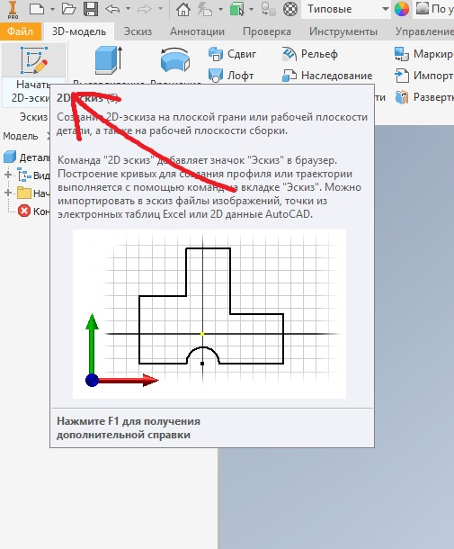
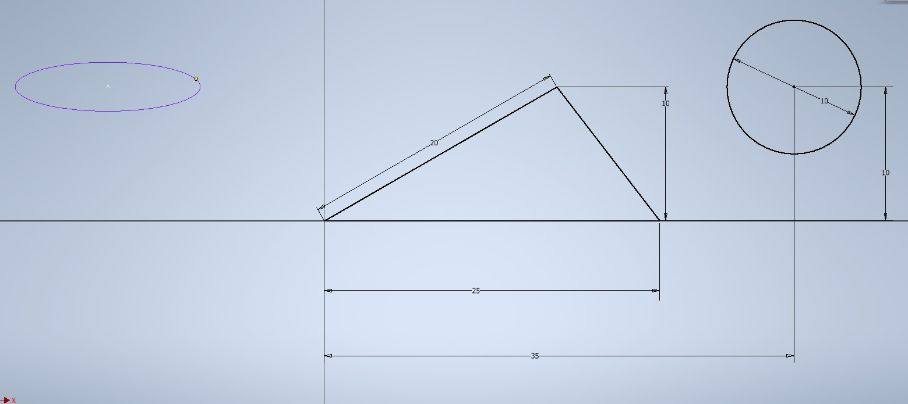

Начнем создание проекта, в котором будут храниться трехмерные объекты и чертежи. Откроем команду Проекты и выберем Создать.
Создадим новый однопользовательский проект, нажимаем Далее, указываем папку нашего проекта, в которой будут храниться все файлы, нажимаем Далее и Готово.
Создался проект, галочка напротив него обозначает, что это активный проект. Двойным нажатием мыши можно переключаться между проектами. Нажимаем Готово.
Можно приступить к созданию детали. Нажимаем Создать, выбираем шаблон для создания детали Название.ipt и нажимаем Создать.
Теперь разберемся немного с интерфейсом создания детали. В верхней части интерфейса программы у нас есть различные вкладки, на панелях сгруппированы команды.
Создадим двухмерный эскиз. На вкладке 3D-модель выберем команду Начать 2D-эскиз, далее нам необходимо выбрать плоскость, в которой будет создаваться этот 3D-эскиз.
В левой части программы у нас есть панель, которая называется Браузер, в ней есть папка Начало, в которой сгруппированы начальные плоскости координат и оси.
Выберем одну из плоскостей для создания эскиза. Выбираем плоскость XY, нажимаем на нее. Теперь эскиз будет создаваться в этой плоскости.
Для создания эскиза можно использовать различные команды. Рассмотрим поочередно эти команды. Начнем с команды Отрезок. Для создания отрезка нам необходимо выбрать начальную точку и указать конечную, затем правой кнопкой нажимаем Ок. Создается отрезок произвольной длины.
Для того чтобы создать отрезок заданной длины, выбираем команду Отрезок, указываем начальную точку, затем выбираем направление и с клавиатуры вводим размер и нажимаем Enter. Создается отрезок, и к нему сразу проставлен размер. В центре эскиза у нас всегда есть точка, которая отвечает за начало координат.
Следующий отрезок проведем от начала координат. Проведем его горизонтально вправо, нажимаем Esc, чтобы выйти из создания отрезка.
Далее на панели Зависимость выберем функцию Размер. Для указания размера отрезка можно указать его начальную или конечную точку и проставить размер, или выбрать целый отрезок и провести вниз для создания размера.
Далее введем значение размера, этот отрезок у нас синего цвета, так как его геометрия полностью определена и двигать его за крайние точки мы уже больше не можем, так как мы его сделали горизонтальным и задали ему размер.
Остальные два отрезка мы можем перемещать в пространстве эскиза, так как они у нас не до конца определены размерами или зависимостями. За крайнюю точку возьмем отрезок и подведем его к концу горизонтального отрезка. Появляется зеленая точка, это говорит о том, что концы отрезков будут совмещены.
Отпускаем мышку и видим, что перетаскивать этот отрезок мы можем только за вторую точку, а первая у нас уже зафиксирована. Таким же образом совместим следующий отрезок с концами предыдущих. Перетаскиваем его до создания зависимости совмещения и появления зеленой точки.
Таким образом мы получили треугольник, и у нас не хватает одного размера, чтобы полностью определить его геометрию.
В нижнем углу программы мы видим, сколько требуется размеров для определения нашего эскиза. Сейчас нам требуется один размер для определения нашего треугольника.
Выберем команду Размеры и проставим размер последнего отрезка, можно указать длину этого отрезка, или размер по вертикали, или по горизонтали для этого отрезка. Укажем горизонтальный размер этого отрезка.
Все отрезки эскиза стали синего цвета, это говорит о том, что эскиз полностью определен размерами и дополнительные размеры не требуются.
Далее рассмотрим создание окружности. Выбираем команду Окружность. Также для создания окружности выбираем центр, и с клавиатуры можно ввести необходимый размер.
Создается окружность с заданным диаметром. Для редактирования размера нажимаем двойным кликом левой клавиши мыши и вводим с клавиатуры необходимое значение.
Для определения расположения окружности мы можем совместить центр окружности к уже существующей геометрии, например к углам треугольника, или задать дополнительный размер.
Укажем размер для определения геометрии окружности. Внизу мы видим, что программа подсказывает, что нам необходимо как минимум два размера для определения расположения окружности.
Укажем размер от начала координат до центра окружности по горизонтали, следующий размер от начала координат до центра окружности по вертикали.
Теперь мы видим, что окружность стала синего цвета, это означает, что расположение ее на поле эскиза также определено.
Раскроем меню под командой Окружность и выберем команду Эллипс для создания эллипса на эскизе. Для создания эллипса нам требуется указать начальную точку, то есть центр эллипса, далее направление большого радиуса
Расположим эллипс горизонтально и далее по вертикали направление малого радиуса. Нажимаем Ок.
Далее размерами нам необходимо указать большой и малый радиусы эллипса. Для этого нажимаем на эллипс и указываем размер радиуса, большой радиус эллипса будет 8 мм, малый радиус – 4,5 мм.
Дальше расположение эллипса можно указать размерами или перетащить центр эллипса, например, на центр окружности. Теперь расположение эллипса у нас закреплено на эскизе.